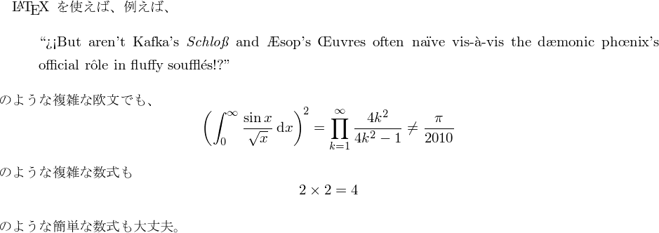
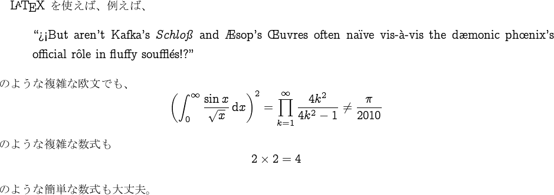
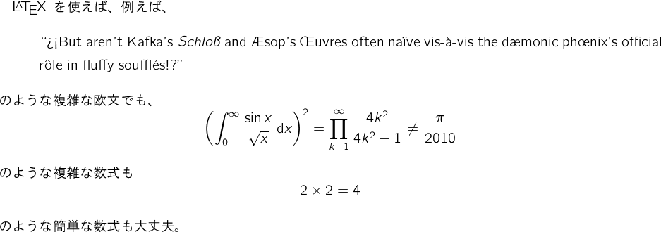

|
|
En toi Pythmeni tes TeXnopoleos
［電脳世界の奥底にて］ |
コンクリートなフォントとか
～Computer Modern の兄弟たち～
- 2010/05/16：一部のアーカイブファイルがリンク切れになっていたのを訂正。
- 2010/02/07：XeLaTeX での使用についてを追加。
概要
- Computer Modern Roman （本家）

- Computer Concrete

- Computer Modern Bright

LaTeX の既定のフォントとして指定されている Computer Modern
フォント（CM フォント）は、TeX の作者でもある Donald E. Knuth がデザインしたものである
ということは（TeX 愛好家の間では）よく知られている。
ところで、この CM ファミリには、他のフォントにはない
大きな特色がある。
CM フォントには大きく分けて Roman、Sans Serif、Typewriter
の 3 つの系列があり、これらがそれぞれ
\rmfamily、\sffamily、\ttfamily
の既定となっている。
当然、同じ文字であってもこの 3 つの間では大きな字形の違いがあるのだが、
CM フォントではこれが「1 つの記述」に対してパラメタ
（60 個以上ある；例えば縦および横の線の太さ、セリフの有無、等）
を変えたものとして実現されている。
従って、CM フォントで行われているもの以外のパラメタ設定 を行う（字形の記述の本体は全く買えずに）ことで、 新しいデザインのフォントができる可能性があるといえる。 この文書では、そういう方法で作られたフォントの中の代表的な 2 つである 「Computer Concrete フォント」と「Computer Modern Bright フォント」 を紹介し、その導入方法を説明する。
Computer Concrete フォント
Computer Concrete フォント（CC フォント） は単一のセリフファミリと数式フォントからなるコレクションである。 この唯一の本文用ファミリである Concrete Roman ファミリは セリフフォントであるが、 CM Roman が縦画と横画の間に明確な線幅の違いをもつのと異なり、 線幅がその向きに関わらずほぼ一定に作られている。 全体として CM Roman よりも濃い色となる。 そのため、画面上等の解像度の低い環境で表示を行った場合に CM Roman よりも高い視認性をもつ。
\documentclass[b4paper]{article}
\usepackage[scale=0.92]{geometry}
\pagestyle{empty}
\begin{document}
\noindent{\sffamily\bfseries CM Roman:}\quad
{\fontfamily{cmr}\selectfont
Such misdeed may well sleep furiously,
just as all those green ideas,
colorless or not!}
\noindent{\sffamily\bfseries CM Roman:}\quad
{\fontfamily{ccr}\selectfont
Such misdeed may well sleep furiously,
just as all those green ideas,
colorless or not!}
\end{document}
Concrete Roman フォントは、Donald Knuth が著書 『Concrete Mathematics』（Ronald Graham、Oren Patashnik との共著） を著す際に、その本文用フォントとして作ったものである。 Knuth はこの本を、当時新しく作られた数式フォント「AMS Euler」 （Hermann Zapf によるデザイン）を用いた最初の出版物にしようと考え、 AMS Euler との調和が CM Roman よりも優れた本文用フォントとしてこの フォントを作成した。 「Concrete Roman」の名はこの書名に由来する。
CC フォントの中で Knuth が作ったものは OT1 エンコーディングのもののみで、 他のエンコーディングや数式用のフォントは 後に他の人により製作されたものである。
インストール
別々に開発された複数の部分からなるという事情があって、 CC フォントの配布は複数のパッケージからなっている。 現在では CC フォントを LaTeX2e で使うには ccfonts パッケージを利用するのが一般的だが、 この場合も、過去のパッケージを併せてインストールする必要がある。
| パッケージ名 | 構成ファイル例 | 作者 | 収録内容 | |
|---|---|---|---|---|
| ① | concrete | ccr10.tfm | Donald Knuth | OT1 版の MF ソース、TFM |
| ② | concmath (fonts) | xccmi10.tfm | Ulrike Vieth | 数式用の MF ソース、TFM |
| ③ | ecc | eorm10.tfm | Walter Schmidt | T1/TS1 用 MF ソース、TFM |
| ④ | concmath (latex) | concmath.sty | Ulrike Vieth | OT1+数式の LaTeX2e スタイル |
| ⑤ | ccfonts | ccfonts.sty | Walter Schmidt | T1/TS1 も扱える LaTeX2e スタイル |
| ⑥ | cm-super | sfrm1000.pfb | Vladimir Volovich | T1/TS1 用 Type1 フォント |
ところで、上の表を見ればよくわかるが、 「OT1 と数式用の Type1 フォント」が抜けている。 すなわち、上掲のパッケージを全て揃えたとしても、 OT1 と数式については、 PDF 文書に変換した時にビットマップになってしまう。 OT1 と数式用の Type1 フォントでフリーのものは公開されていない ようなので（有償のものはある）、 私が TeXtrace による自動トレースで作成した Type1 フォントを公開しておく。
- RC Fonts パッケージ v0.1（1.26MB）
[2010/01/16]
Reinforced Concrete Fonts すなわち「鉄筋コンクリートフォント」。 特に深い意味はない ;-)
TeX Live であれば、上記のパッケージは全て含まれている （勿論、拙作の RC Fonts はない）。 残念ながら、W32TeX には①しか含まれていない。 そこで、②～⑤と RC Fonts を W32TeX の TeXMF ツリーにそのまま 導入できる構成にしたものを用意した。 ⑥については容量が大きく、また T1 の CM フォントのために 既に導入しているユーザも多いと思うので含めていない。 CC フォントを T1/TS1 で使いたい場合は適宜追加してほしい。
- texmf-cc.zip（1.46MB） [2010/05/16]
W32TeX をインストールしたフォルダを C:\usr\local だとすると、次の手順でインストールできる。
- C:\usr\local\share\texmf-local の直下で texmf-cc.zip を展開する。 （あるいは、別の場所で展開して現れた doc 等のフォルダを 上記のフォルダの中に入れる。） mktexlsr を実行する。
- RC Fonts のマップファイルを updmap に登録する。
すなわち、
C:\usr\local\share\texmf\dvipdfmx\config\dvipdfmx.cfg
に次の記述を追加して、updmap を実行する。
Map rcfonts.map
使用法
ccfonts パッケージを読み込むと、セリフファミリ
（\rmfamily）の割当が CM Roman から CC Roman
に変更される。
さらに数式フォントも CC フォントのものに変更される。
なお、CC フォントには太字がないので、
太字のシリーズ（\bfseries）については、
CM Roman のもので代用される。
ccfonts パッケージは、
行送りを欧文文書クラスの通常の設定より少し大きな値に変更する。
（フォントサイズが 10pt の場合、12pt → 13pt。）
ところが、和文文書クラスだとより大きい行送りが使われている
（jsarticle だと 15pt）ので、
変更されると逆に行送りが狭くなって不適切である。
これに対して、行送りの変更を抑止する
standard-baselineskips オプションが用意されて
いるので、和文の場合はこれを設定するのがよい。
\documentclass[a4paper]{jsarticle}
\usepakcage[standard-baselineskips]{ccfonts}
\begin{document}
{\LaTeX}を使えば、例えば
\begin{quote}Is this a pen or a dog?\end{quote}
のような簡単な欧文でも、
\[ 2 \times 2 \neq 2010\pi \]
のような簡単な数式でも大丈夫。
\end{document}
\documentclass[a4paper]{jsarticle}
\usepakcage[standard-baselineskips]{ccfonts}
\begin{document}
{\LaTeX}を使えば、例えば
\begin{quote}Ndicela uxolo!\end{quote}
のような簡単な欧文でも、
\[ 2 \times 2 \neq 2010\pi \]
のような簡単な数式でも大丈夫。
\end{document}
Concrete + AMS Euler の組み合わせ
Knuth が行ったような、 「本文フォントは Concrete Roman、数式フォントは AMS Euler」 というフォント設定を行う場合は、 ccfonts の後に eulervm パッケージを読み込めばよい。
\documentclass[a4paper]{jsarticle}
\usepackage[standard-baselineskips]{ccfonts}
\usepackage{eulervm}
\begin{document}
{\LaTeX} を使えば、例えば、
\begin{quote}
``?`!`But aren't Kafka's \emph{Schlo{\ss}} and {\AE}sop's {\OE}uvres
often na\"{\i}ve vis-\`a-vis the d{\ae}monic ph{\oe}nix's
official r\^ole in fluffy souffl\'es!?''
\end{quote}
のような複雑な欧文でも、
\[
\left( \int_0^\infty \frac{\sin x}{\sqrt x}\,\mathrm{d}x \right)^2 =
\prod_{k=1}^\infty \frac{4k^2}{4k^2-1} \neq \frac{\pi}{2010}
\]
のような複雑な数式も
\[
2 \times 2 = 4
\]
のような簡単な数式も大丈夫。
\end{document}
Computer Modern Bright フォント
Computer Modern Bright フォント（CM Bright フォント） はサンセリフ体とタイプライタ体の 2 つの本文用ファミリと数式用フォントから構成される。 サンセリフ体をメインにした文書の作成を目的にして製作されたものである。 従って、数式用フォントもサンセリフ体のデザインになっている。 サンセリフ体のファミリである CM Bright ファミリ CM Sans-serif に比べて線幅が細く「軽い」印象になっている。 そして、タイプライタ体の CM Typewriter Light ファミリは CM Bright と調和するように CM Typewriter の線幅を細くしたものである。
インストール
CC フォント程ではないが、CM Bright も複数のパッケージに 分かれて配布されている。 TeX Live の配布物には全て含まれているが、 W32TeX はどれも含んでいない。
| パッケージ名 | 構成ファイル例 | 作者 | 収録内容 | |
|---|---|---|---|---|
| ① | cmbright | ccr10.tfm | Walter Schmidt | MF ソース、TFM、LaTeX2e スタイル |
| ② | hfbright | xccmi10.tfm | Harald Harders | OT1+数式用 Type1 フォント |
| ③ | cm-super | sfrm1000.pfb | Vladimir Volovich | T1/TS1 用 Type1 フォント |
CC フォントと同様に、 ①、②を W32TeX の TeXMF ツリーにそのまま 導入できる構成にしたものを用意した。
- texmf-cmbr.zip（1.46MB） [2010/05/16]
W32TeX をインストールしたフォルダを C:\usr\local だとすると、次の手順でインストールできる。
- C:\usr\local\share\texmf-local の直下で texmf-cmbr.zip を展開する。 （あるいは、別の場所で展開して現れた doc 等のフォルダを 上記のフォルダの中に入れる。） mktexlsr を実行する。
- hfbright のマップファイルを updmap に登録する。
すなわち、
C:\usr\local\share\texmf\dvipdfmx\config\dvipdfmx.cfg
に次の記述を追加して、updmap を実行する。
Map hfbright.map
サンセリフ体（ゴシック体）がメインの文書を作成する
cmbright パッケージを読み込むと、
サンセリフファミリ（\sffamily）、
等幅フォント（\ttfamily）、
および数式フォントの割当が CM Bright のものに変更されるのと同時に、
文書におけるメインのファミリがサンセリフに設定される。
\documentclass[a4paper]{article}
\usepackage{cmbright}
\begin{document}
For very small $\varepsilon$, you can approximate as follows:
$(1 + \varepsilon)^r \approx 1 + r\varepsilon$.
\end{document}
参考： 「文書のメインのフォントをサンセリフにする」 という設定を自分で行うには、次の記述をプレアンブルに追加すればよい。
\renewcommand{\familydefault}{\sfdefault}
\normalfont
単に文書の先頭で \sffamily を実行した場合、
本文領域のフォントはサンセリフになるが、
ノンブル（ページ番号）や柱の出力での既定フォントは変わらない。
ただし、pLaTeX で和文を含む文書の場合、cmbright パッケージは
和文フォントについては何も設定を変更しない。
和文のメインの書体をゴシック（\gtfamily）
にする場合は以下の例のような設定を加える。
なお、細身のゴシック体の方が CM Bright と調和するので、
この例では既定のゴシック体フォントを「HGゴシックM」に変更している。
（ここでは
pxchfon パッケージを使っているが、
手段については別に何でもよい。）
また、ccfonts の場合と同様に、
行送りの変更を抑止するために cmbright パッケージに
standard-baselineskips オプションを指定している。
\documentclass[a4paper]{jsarticle}
\usepackage[standard-baselineskips]{cmbright}
% ゴシックのフォントを「HGゴシックM」に変更
\usepackage{pxchfon}
\setgothicfont[0]{hgrgm.ttc}
% 和文のメインのフォントをゴシックに変更
\renewcommand{\kanjifamilydefault}{\gtdefault}
\normalfont
\begin{document}
複素数 $z$ の絶対値は複素平面上の $z$ と原点（0）との距離
として定義される。
\[ |x + yi| = \sqrt{x^2 + y^2} \quad\mbox{（$x$, $y$ は実数）} \]
\end{document}
XeLaTeX での使用について
最後に、CC フォントと CM Bright フォントを XeLaTeX で使う方法に ついて述べる。 XeLaTeX では本文（非数式）は Unicode フォントを用いるのが標準であるので、 まずこれらの書体の Unicode フォントが必要であるが、これは Computer Modern Unicode フォント （SourceForge.net のページ）の 配布アーカイブの中に含まれている。 SourceForge のダウンロードページから cm-unicode-0.6.3a-otf.tar.gz （または最新版の cm-unicode-0.7.0-otf.tar.xz）を取得してそれを展開すれば OpenType フォントが得られる。 W32TeX の場合は XeTeX の解説ページに 述べた手順に従ってインストールすればよい。 数式フォントを併用する場合は、 同じページの別の箇所で説明するように、 8 ビット欧文用のフォント（Type1 形式）を使うことになる。
参考： CM Unicode のアーカイブの中で該当するファイルは以下のとおり。
- cmun{orm,oti,obx,obi}.otf ― CC フォント
- cmun{bmr, bmo, bsr, bso, bbx. bxp}.otf ― CM Bright フォント
CM Unicode 版の Concrete Roman のファミリ名は「CMU Concrete」である。
\documentclass[a4paper]{article}
\usepackage{ccfonts}
%\usepackage{eulervm} % 数式フォントを AMS Euler にする場合
\usepackage[no-math]{fontspec}
\setmainfont{CMU Concrete}
\begin{document}
An interesting fact about subfactorial is the following
asymptotic equality:
\begin{equation}
\lim_{n\to\infty} \frac{n\mbox{¡}}{n!} = \frac{1}{e}.
\end{equation}
\end{document}
\mbox に入れて非数式扱いにしている
（だから UTF-8 直接入力が有効）。
ところで、「Concrete Mathematics」では数式中の〈!〉を AMS Euler
で出力しているはずだが、AMS Euler には
（一般的な数式記号でない）〈¡〉は存在しない。
Knuth はどう対処したのだろうか？
CM Unicode 版の CM Bright のファミリ名は「CMU Bright」である。 以下ではサンセリフ体＋ゴシック体をメインとした日本語文書の例を示す。 例によって、ZXjatype 等を用いている。
\documentclass[a4paper]{bxjsarticle}
\usepackage[standard-baselineskips]{cmbright} % 数式フォントパッケージを先に
\usepackage[no-math]{fontspec} % no-math が要るので明示的に読込
\usepackage{zxjatype}
\setsansfont{CMU Bright} % なおセリフは LM Roman のまま
\setjamainfont{IPA明朝} % 一応明朝も指定しておく
\setjamainfont{HGｺﾞｼｯｸM} % 細めのゴシックがよい
\begin{document}
{\LaTeX}\>を使えば、例えば、 % \> = 和欧文間空白
\begin{quote}\begin{rawentext} % 約物が和文扱いされるのを防ぐ
„Aber sind Kafkas \emph{Schloß} und Äsops Œuvres nicht oft naiv
vis-à-vis der offizielen Rolle des dämo\-ni\-schen Phönixes
in flockigen Soufflés?“
\end{rawentext}\end{quote}
のような複雑な欧文でも、
\[
\left( \int_0^\infty \frac{\sin x}{\sqrt x}\,\mathrm{d}x \right)^2 =
\prod_{k=1}^\infty \frac{4k^2}{4k^2-1} \neq \frac{\pi}{2010}.
\]
のような複雑な数式でも、
\begin{quote}\begin{rawentext}
Дваждый два — четыре.
\end{rawentext}\end{quote}
のような簡単なロシア語でも大丈夫。
\end{document}
\sffamily にする」
設定がそのまま和文にも適用されている。
dämo\-ni\-schen
のところで手動でハイフネーション指定をしている。
なお、XeLaTeX において「言語指定」を行うためのパッケージ
（8 ビット欧文 LaTeX での Babel に相当するもの）
は Polyglossia である。